사회조사분석사-2급 (2019-03-03 기출문제)
1과목: 조사방법론 I
1. 직접관찰과 간접관찰을 분류하는 기준으로 옳은 것은?
- 상황배경이 인위적인가 자연적인가
- 관찰대상자가 관찰사실을 아는가
- 관찰대상의 체계화 정도
- 관찰시기와 행동발생의 일치여부
(정답률: 61%)

2. 연구에 사용할 가설이 좋은 가설인지 여부를 판단하기 위한 평가기준과 가장 거리가 먼 것은?
- 가설의 표현은 간단명료해야 한다.
- 가설은 계량화 할 수 있어야 한다.
- 가설은 경험적으로 검증할 수 있어야 한다.
- 동일 연구분야의 다른 가설이나 이론과 연관이 없어야 한다.
(정답률: 85%)
3. 심층면접법(depth interview)에 관한 설명으로 틀린 것은?
- 질문의 순서와 내용은 조사자가 조정할 수 있어 좀 더 자유롭고 심도 깊은 질문을 할 수 있다.
- 조사자의 면접능력과 분석능력에 따라 조사결과의 신뢰도가 달라진다.
- 초점집단면접과 비교하여 자유롭게 개인적인 의견을 교환할 수 없다.
- 조사자가 필요하다고 생각되면 반복질문을 통해 타당도가 높은 자료를 수집한다.
(정답률: 65%)
4. 다음 사례의 외생변수 통제방법은?
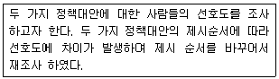
- 제거(elimination)
- 균형화(matching)
- 상쇄(counter balancing)
- 무작위화(randomization)
(정답률: 64%)
5. 자기기입식 설문조사와 비교한 면접설문조사의 장점으로 옳은 것은?
- 자료입력이 편리하다.
- 응답의 결측치를 최소화한다.
- 조사대사 1인당 비용이 저렴하다.
- 폐쇄형 질문에 유리하다.
(정답률: 76%)
6. 이론의 기능을 모두 고른 것은?
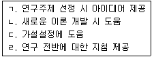
- ㄴ, ㄷ
- ㄱ, ㄴ, ㄷ
- ㄱ, ㄷ, ㄹ
- ㄱ, ㄴ, ㄷ, ㄹ
(정답률: 83%)
7. 다음 중 질문지법에서 질문항목의 배열순서에 대한 설명으로 틀린 것은?
- 간단한 내용의 질문이라도 응답자들이 응답하기를 주저하는 내용의 질문은 가급적 마지막에 배치해야 한다.
- 부담감 없이 쉽게 응답할 수 있는 단순한 내용의 질문은 복잡한 내용의 질문보다 먼저 제시되어야 한다.
- 응답자들의 관심을 끌 수 있는 일반적인 내용의 질문은 앞부분에 제시되어야 한다.
- 비록 응답자들이 응답을 회피하는 항목이라도 개인의 사생활에 관련된 기본항목은 가능한 한 질문지의 시작으로 다루어지는 것이 효과적이다.
(정답률: 83%)
8. 설문지 작성과정 중 사전검사(pre-test)를 실시하는 이유와 가장 거리가 먼 것은?
- 연구하려는 문제의 핵심적인 요소가 무엇인지 확인한다.
- 응답이 한쪽으로 치우치지 않는지 확인한다.
- 질문 순서가 바뀌었을 때 응답에 실질적 변화가 일어나는지 확인한다.
- 무응답, 기타응답이 많은 경우를 확인한다.
(정답률: 65%)
9. 질문지의 개별항목을 완성할 때 주의사항으로 옳은 것은?
- 다양한 정보의 획득을 위해 한 질문에 2가지 이상의 요소가 포함되는 것이 바람직하다.
- 질문의 용어는 응답자 모두가 이해할 수 있도록 이해력이 낮은 사람의 수준에 맞춰야 한다.
- 질문내용에 응답자에 대한 가정을 제시하여 응답편의를 제공하는 것이 바람직하다.
- 질문지의 용이한 작성을 위해 일정한 방향을 유도하는 문항을 가지는 것이 필요하다.
(정답률: 77%)
10. 다음 자료수집방법 중 조사자가 미완성의 문장을 제시하면 응답자가 이 문장을 완성시키는 방법은?
- 투사법
- 면접법
- 관찰법
- 내용분석법
(정답률: 72%)
11. 다음 중 좋은 가설이 아닌 것은?
- 부모의 학력이 높을수록 자녀의 학력도 높아진다.
- 자녀학업을 위한 가족분리는 바람직하지 않다.
- 고객만족도가 높을수록 기업의 재무적 성과가 더 높아진다.
- 리더십형태에 따라 직원의 직무만족도가 달라진다.
(정답률: 77%)
12. 다음에 해당하는 연구유형은?
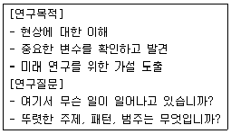
- 탐색적 연구
- 기술적 연구
- 종단적 연구
- 설명적 연구
(정답률: 72%)
13. 실험설계의 내적 타당도 저해요인이 아닌 것은?
- 검사효과
- 사후검사
- 실험대상의 탈락
- 성숙 또는 시간의 경과
(정답률: 66%)
14. 실증주의적 과학관에서 주장하는 과학적 지식의 특징과 가장 거리가 먼 것은?
- 객관성(objectivity)
- 직관성(intuition)
- 재생가능성(reproducibility)
- 반증가능성(falsifiability)
(정답률: 69%)
15. 조사문제를 해결하기 위한 연구절차를 바르게 나열한 것은?
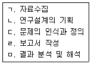
- ㄴ → ㄷ → ㄱ → ㅁ → ㄹ
- ㄴ → ㄱ → ㄷ → ㄹ → ㅁ
- ㄷ → ㄴ → ㄱ → ㅁ → ㄹ
- ㄷ → ㄱ → ㄴ → ㄹ → ㅁ
(정답률: 79%)
16. 다음 중 전화조사가 가장 적합한 경우는?
- 어떤 시점에 순간적으로 무엇을 하며, 무슨 생각을 하는 가를 알아내기 위한 조사
- 자세하고 심층적인 정보를 얻기 위한 조사
- 저렴한 가격으로 면접자 편의(bias)를 줄일 수 있으며 대답하는 요령도 동시에 자세히 알려줄 수 있는 조사
- 넓은 범위의 지리적인 영역을 조사대상지역으로 하여 비교적 복잡한 정보를 얻으면서, 경비를 절약할수 있는 조사
(정답률: 63%)
17. 다음 중 실험설계의 전제조건을 모두 고른 것은?
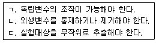
- ㄱ, ㄴ
- ㄴ, ㄷ
- ㄱ, ㄷ
- ㄱ, ㄴ, ㄷ
(정답률: 71%)
18. 다음 중 표준화면접의 사용이 가장 적합한 경우는?
- 새로운 사실을 발견하고자 할 때
- 정확하고 체계적인 자료를 얻고자 할 때
- 피면접자로 하여금 자유연상을 하게 할 때
- 보다 융통성 있는 면접분위기를 유도하고자 할 때
(정답률: 82%)
19. 사회조사에서 내용분석을 실시하기에 적합한 경우를 모두 고른 것은?
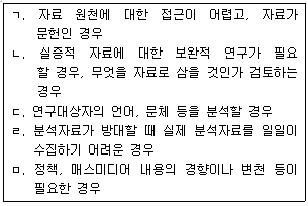
- ㄱ, ㄷ, ㄹ
- ㄱ, ㄴ, ㅁ
- ㄴ, ㄷ, ㄹ, ㅁ
- ㄱ, ㄴ, ㄷ, ㄹ, ㅁ
(정답률: 71%)
20. 다음에서 설명하는 조사방법은?
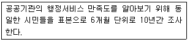
- 추세조사
- 패널조사
- 탐색적 조사
- 횡단적 조사
(정답률: 72%)
21. 폐쇄형 질문의 응답범주 작성원칙으로 옳은 것은?
- 범주의 수는 많을수록 좋다.
- 제시된 범주가 가능한 모든 응답범주를 다 포함해야 한다.
- 관련된 현상 중 가장 중요한 것만 범주로 제시한다.
- 제시된 범주들 사이에 약간의 중복은 있어도 무방하다.
(정답률: 71%)
22. 관찰을 통한 자료수집시 지각과정에서 나타나는 오류를 감소하기 위한 방안과 가장 거리가 먼 것은?
- 보다 큰 단위의 관찰을 한다.
- 객관적인 관찰 도구를 사용한다.
- 관찰기간을 될 수 있는 한 길게 잡는다.
- 가능한 한 관찰단위를 명세화해야 한다.
(정답률: 69%)
23. 다음 중 과학적 연구에 관한 설명으로 틀린 것은?
- 연구의 목적은 현상을 체계적으로 조사하고 분석하여 문제를 해결하는 것이다.
- 과학적 연구는 핵심적, 실증적 그리고 주관적으로 수행하는 것이다.
- 예측을 위한 연구는 이론에 근거하여 주로 이루어진다.
- 연구의 결론은 자료가 제공하는 범위 안에서 내려져야 한다.
(정답률: 76%)
24. 질적연구에 관한 옳은 설명을 모두 고른 것은?
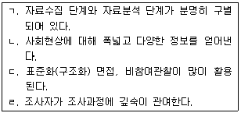
- ㄱ, ㄴ
- ㄱ, ㄷ
- ㄴ, ㄷ
- ㄴ, ㄹ
(정답률: 69%)
25. 과학적 연구의 논리체계에 관한 설명으로 틀린 것은?
- 연역적 논리는 일반적인 사실로부터 특수한 사실을 이끌어내는 방법이다.
- 연역적 논리는 반복적 관찰을 통해 반복적인 패턴을 발견한다.
- 귀납적 논리는 경험을 결합하여 이론을 형성하는 방법이다.
- 귀납적 방법은 탐색적 연구에 주로 쓰인다.
(정답률: 61%)
26. 우편조사의 응답률에 영향을 미치는 요인과 가장 거리가 먼 것은?
- 응답집단의 동질성
- 응답자의 지역적 범위
- 질문지의 양식 및 우송방법
- 연구주관기관 및 지원단체의 성격
(정답률: 65%)
27. 과학적 조사연구의 목적과 가장 거리가 먼 것은?
- 현상에 대한 기술이나 묘사
- 발생한 사실에 대한 설명
- 새로운 분야에 대한 탐색
- 인간 내면의 문제에 대한 가치판단
(정답률: 84%)
28. 다음 사례에 해당하는 오류는?
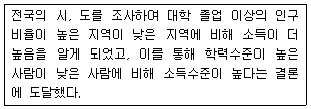
- 무작위 오류
- 체계적 오류
- 환원주의 오류
- 생태학적 오류
(정답률: 65%)
29. 비표준화 면접에 비해, 표준화 면접의 장점이 아닌 것은?
- 새로운 사실, 아이디어의 발견가능성이 높다.
- 면접결과의 계량화가 용이하다.
- 반복적 연구가 가능하다.
- 신뢰도가 높다.
(정답률: 75%)
30. 솔로몬 연구설계에 관한 옳은 설명을 모두 고른 것은?
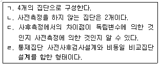
- ㄱ, ㄴ, ㄷ
- ㄱ, ㄷ
- ㄴ, ㄹ
- ㄱ, ㄴ, ㄷ, ㄹ
(정답률: 52%)
2과목: 조사방법론 II
31. 2년제 대학의 대학생 집단을 학년과 성별, 계열별(인문계, 자연계, 예체능계)로 구분하여 할당표본추출을 할 경우 할당표는 총 몇 개의 범주로 구분되는가?
- 3개
- 5개
- 12개
- 24개
(정답률: 79%)
32. 다음 중 가장 다양한 통계기법을 적용할 수 있는 측정수준은?
- 명목측정
- 서열측정
- 비율측정
- 등간측정
(정답률: 75%)
33. 개념적 정의의 특성으로 틀린 것은?
- 순환적인 정의가 이루어져야 한다.
- 적극적 혹은 긍정적인 표현을 써야 한다.
- 정의하려는 대상이 무엇이든 그것만의 특유한 요소나 성질을 적시해야 한다.
- 뜻이 분명해서 누구나 알아들을 수 있는 의미를 공유하는 용어를 써야 한다.
(정답률: 61%)
34. 다음 중 비표본오차의 원인과 가장 거리가 먼 것은?
- 표본선정의 오류
- 조사설계상 오류
- 조사표 작성 오류
- 조사자의 오류
(정답률: 59%)
35. 측정의 신뢰성을 높이는 방법과 가장 거리가 먼 것은?
- 측정항목의 수를 줄인다.
- 측정항목의 모호성을 제거한다.
- 조사자의 면접방식과 태도에 일관성을 확보한다.
- 이전의 조사에서 신뢰성이 있다고 인정된 측정도구를 이용한다.
(정답률: 82%)
36. 도박중독자의 심리적 상태를 파악하기 위해 처음 알게 된 도박중독자로부터 다른 대상을 소개받고, 다시 소개받은 대상으로부터 제3의 대상자를 소개받는 절차로 이루어지는 표본추출방법은?
- 판단표집(judgement sampling)
- 군집표집(cluster sampling)
- 눈덩이표집(snowball sampling)
- 비비례적층화표집(disproportionate stratified sampling)
(정답률: 82%)
37. 척도구성방법을 비교척도구성(comparative scaling)과 비비교척도구성(non-comparative scaling)으로 구분할 때 비교척도구성에 해당하는 것은?
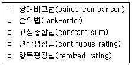
- ㄱ, ㄴ, ㄷ
- ㄱ, ㄷ, ㅁ
- ㄹ, ㅁ
- ㄱ, ㄴ, ㄷ, ㄹ, ㅁ
(정답률: 58%)
38. 측정오차 중 체계적 오차(systematic error)와 관련된 것은?
- 통계적 회귀
- 생태학적 오류
- 환원주의적 오류
- 사회적 바람직성 편향
(정답률: 53%)
39. 다음 그림에 대한 설명으로 옳은 것은?
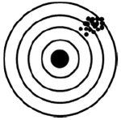
- 신뢰성은 높으나 타당성이 낮은 경우
- 신뢰성은 낮으나 타당성이 높은 경우
- 신뢰성과 타당성이 모두 낮은 경우
- 신뢰성과 타당성이 모두 높은 경우
(정답률: 82%)
40. 다음 중 불포함 오류에 관한 설명으로 옳은 것은?
- 표본조사를 할 때 표본체계가 완전하게 되지 않아서 발생하는 오류이다.
- 표본추출과정에서 선정된 표본 중 일부가 연결이 되지 않거나 응답을 거부했을 때 생기는 오류이다.
- 면접이나 관찰과정에서 응답자나 조사자 자체의 특성에서 생기는 오류와 양자 간의 상호관계에서 생기는 오류이다.
- 정확한 응답이나 행동을 한 결과를 조사자가 잘못 기록하거나 기록된 설문지나 면접지가 분석을 위하여 처리되는 과정에서 틀려지는 오류이다.
(정답률: 40%)
41. 신뢰성 측정방법 중 재검사법(test-retest method)에 관한 설명으로 틀린 것은?
- 동일한 측정대상에 대하여 동일한 측정도구를 통해 일정 시간 간격을 두고 반복적으로 측정하여 그 결과값을 비교, 분석하는 방법이다.
- 측정도구 자체를 직접 비교할 수 있고 실제 현상에 적용시키는데 매우 용이하다.
- 측정시간의 간격이 크면 클수록 신뢰성은 높아진다.
- 외생변수의 영향을 파악하기 어렵다.
(정답률: 60%)
42. 표집틀(sampling frame)과 모집단과의 관계로 가장 이상적인 경우는?
- 표집틀과 모집단이 일치할 때
- 표집틀이 모집단내에 포함될 때
- 모집단이 표집틀내에 포함될 때
- 모집단과 표집틀의 일부분만이 일치할 때
(정답률: 62%)
43. 어떤 개념을 측정하기 위해 여러 개의 문항으로 이루어진 척도(scale)를 사용하는 이유를 모두 고른 것은?
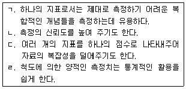
- ㄱ, ㄴ
- ㄱ, ㄷ, ㄹ
- ㄴ, ㄷ, ㄹ
- ㄱ, ㄴ, ㄷ, ㄹ
(정답률: 68%)
44. 확률표본추출방법에 해당하는 것은?
- 판단표집(judgement sampling)
- 편의표집(convenience sampling)
- 단순무작위표집(simple random sampling)
- 할당표집(quota sampling)
(정답률: 79%)
45. 측정오차(error of measurement)에 관한 설명으로 옳은 것은?
- 체계적 오차(systematic error)의 값은 상호상쇄 되는 경향이 있다.
- 신뢰성은 체계적 오차(systematic error)와 관련된 개념이다.
- 타당성은 비체계적 오차(random error)와 관련된 개념이다.
- 비체계적 오차(random error)는 인위적이지 않아 오차의 값이 다양하게 분산되어 있다.
(정답률: 66%)
46. 3가지의 변수가 다음과 같은 순서로 영향을 미칠 때 사회적 통합을 무슨 변수라고 하는가?
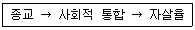
- 외적변수
- 매개변수
- 구성변수
- 선행변수
(정답률: 78%)
47. 층화표집(stratified random sampling)에 대한 설명으로 틀린 것은?
- 중요한 집단을 빼지 않고 표본에 포함시킬 수 있다.
- 동질적 대상은 표본의 수를 줄이더라도 정확도를 제고할 수 있다.
- 단순무작위표본추출보다 시간, 노력, 경비를 절약할 수 있다.
- 층화 시 모집단에 대한 지식이 없어도 된다.
(정답률: 72%)
48. 다음 설명에 해당하는 척도구성기법은?
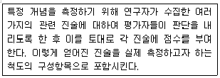
- 서스톤척도(thurston scale)
- 리커트척도(likert scale)
- 거트만척도(guttman scale)
- 의미분화척도(semantic differential scale)
(정답률: 52%)
49. 다음 사례에서 성적은 어떤 변수에 해당되는가?
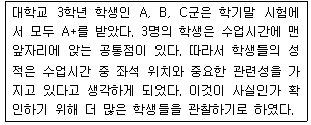
- 독립변수
- 통제변수
- 매개변수
- 종속변수
(정답률: 74%)
50. 서로 다른 개념을 측정했을 때 얻어진 측정치들 간의 상관관계가 낮게 형성되어야 하는 타당성의 유형은?
- 집중타당성(convergent validity)
- 판별타당성(discriminant validity)
- 표면타당성(face validity)
- 이해타당성(nomological validity)
(정답률: 66%)
51. 측정을 위해 개발한 도구가 측정하고자 하는 대상의 정확한 속성값을 얼마나 포괄적으로 포함하고 있는가를 나타내는 타당도는?
- 내용타당성(content validity)
- 기준관련타당성(criterion-related validity)
- 집중타당성(convergent validity)
- 예측타당성(predictive validity)
(정답률: 64%)
52. 표본의 크기를 결정할 때에 고려하여야 할 사항과 가장 거리가 먼 것은?
- 모집단의 규모
- 표본추출방법
- 통계분석의 기법
- 연구자의 수
(정답률: 71%)
53. 다음 중 표본추출에 대한 설명으로 틀린 것은?
- 표본조사가 전수조사에 비해 시간과 비용이 적게 든다.
- 관찰단위와 분석단위가 반드시 일치하는 것은 아니다.
- 모수는 표본조사를 통해 얻는 통계량을 바탕으로 추정한다.
- 단순무작위추출방법은 일련번호와 함께 표본간격이 중요하다.
(정답률: 65%)
54. 다음 설문문항에서 사용한 척도는?
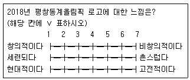
- 리커트척도(likert scale)
- 거트만척도(guttman scale)
- 서스톤척도(thurston scale)
- 의미분화척도(semantic differential scale)
(정답률: 71%)
55. 관찰된 현상의 경험적인 속성에 대해 일정한 규칙에 따라 수치를 부여하는 것은?
- 척도(scale)
- 지표(indicator)
- 변수(variable)
- 측정(measurement)
(정답률: 54%)
56. 확률표집(probability sampling)에 관한 설명으로 옳은 것은?
- 표본이 모집단에 대해 갖는 대표성을 추정하기 어렵다.
- 모집단이 무한하게 클 경우에 적용할 수 있는 표집방법이다.
- 표본의 추출 확률을 알 수 있다.
- 모집단 전체에 대한 구체적 자료가 없는 경우 사용된다.
(정답률: 65%)
57. 축구선수의 등번호를 표현하는 측정 수준은?
- 비율수준의 측정
- 명목수준의 측정
- 등간수준의 측정
- 서열수준의 측정
(정답률: 78%)
58. 조작적 정의(operational definition)에 관한 설명과 가장 거리가 먼 것은?
- 측정의 타당성(validity)과 관련이 있다.
- 적절한 조작적 정의는 정확한 측정의 전제조건이다.
- 조작적 정의는 무작위로 기계적으로 이루어지기 때문에 논란의 여지가 없다.
- 측정을 위해 추상적인 개념을 보다 구체화하는 과정이라고 할 수 있다.
(정답률: 81%)
59. 서울지역의 전화번호부를 이용하여 최초의 101번째 사례를 임의로 결정한 후 계속 201, 301, 401 번째의 순서로 뽑는 표집방법은?
- 층화표집(stratified random sampling)
- 단순무작위표집(simple random sampling)
- 계통표집(systematic sampling)
- 편의표집(convenience sampling)
(정답률: 72%)
60. 신뢰성을 측정하는 방법과 가장 거리가 먼 것은?
- 반분법
- 공통분산검사
- 내적일관성법
- 복수양식검사
(정답률: 61%)
3과목: 사회통계
61. 어느 이동통신 회사에서 20대를 대상으로 자사의 선호도에 대한 조사를 하려한다. 전년도 조사에서 선호도가 40%이었다. 금년도 조사에서 선호도에 대한 추정의 95% 오차한계가 4% 이내로 되기 위한 표본의 최소 크기는? (단, Z ~ N(0,1)일 때, P(Z＞1.96)=0.025, P(Z＞1.65)=0.⑤)
- 409
- 426
- 577
- 601
(정답률: 38%)
62. 오른쪽으로 꼬리가 길게 늘어진 형태의 분포에 대해 옳은 설명으로만 짝지어진 것은?
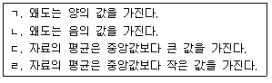
- ㄱ, ㄷ
- ㄱ, ㄹ
- ㄴ, ㄷ
- ㄴ, ㄹ
(정답률: 53%)
63. 두 변수 X와 Y에 대해서 9개의 관찰값으로부터 계산한 통계량들이 다음과 같을 때, 단순회귀모형의 가정 하에 추정한 회귀직선은?
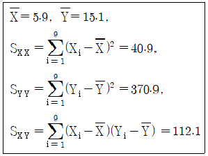
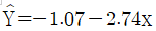
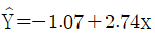
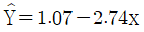
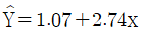
(정답률: 47%)
64. 일원분산분석으로 4개의 평균의 차이를 동시에 검정하기 위하여 귀무가설을 H0 : μ1=μ2=μ3=μ4라 정할 때 대립가설 H1은?
- H1 : 모든 평균이 다르다.
- H1 : 적어도 세 쌍 이상의 평균이 다르다.
- H1 : 적어도 두 쌍 이상의 평균이 다르다.
- H1 : 적어도 한 쌍 이상의 평균이 다르다.
(정답률: 61%)
65. 월요일부터 금요일까지 업무를 보는 어느 가전제품 서비스센터에서는 요일에 따라 애프터서비스 신청률이 다른가를 알아보기 위해 요일별 서비스 신청건수를 조사한 결과 다음과 같았다. 귀무가설 “ H0: 요일별 서비스 신청률은 모두 동일하다.”를 유의수준 5%에서 검정할 때, 검정통계량의 값과 검정결과로 옳은 것은? (단, X2(4,0.⑤)=9.49이며 X2(k, a)는 자유도 k인 카이제곱분포의 100(1-a)%백분위 수이다.
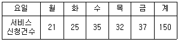
- 10.23, H0를 기각함
- 10.23, H0를 채택함
- 6.13, H0를 기각함
- 6.13, H0를 채택함
(정답률: 32%)
66. n개의 베르누이시행(Bernoulli's trial)에서 성공의 개수를 X라 하면 X의 분포는?
- 기하분포
- 음이항분포
- 초기하분포
- 이항분포
(정답률: 69%)
67. 상자그림에 대한 설명으로 틀린 것은?
- 상자그림을 보면 자료의 분포를 개략적으로 파악할 수있다.
- 두 집단의 분포 모양에 대한 비교가 가능하다.
- 이상값에 대한 정보를 알 수 있다.
- 상자그림의 상자 길이와 분산과는 아무런 관련이 없다.
(정답률: 65%)
68. 두 변수 (X, Y)의 n개의 표본자료 (x1, y1),.....,(xn, yn)에 대하여 다음과 같이 정의된 표본상관계수 r에 관한 설명으로 틀린 것은?
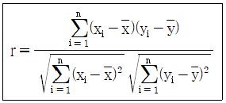
- 상관계수는 항상 -1 이상, 1이하의 값을 갖는다.
- X와 Y사이의 상관계수의 값과 (X+2)와 2Y 사이의 상관계수의 값은 같다.
- X와 Y사이의 상관계수의 값과 -3X와 2Y사이의 상관계수의 값은 같다.
- 서로 연관성이 있는 경우에도 X와 Y사이의 상관계수의값은 0이 될 수도 있다.
(정답률: 48%)
69. 69. 곤충학자가 70마리의 모기에게 A회사의 살충제를 뿌리고 생존시간을 관찰하여
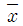
=18.3, s=5.2를 얻었다. 생존시간의 모평균 μ에 대한 99% 신뢰구간은?- 8.6 ≤ μ ≤ 28.0
- 17.1 ≤ μ ≤ 19.5
- 18.1 ≤ μ ≤ 18.5
- 16.7 ≤ μ ≤ 19.9
(정답률: 38%)
70. 5점 척도의 만족도 설문조사를 한 결과가 다음과 같을 때 만족도 평균은? (단, 1점은 매우 불만족, 5점은 매우 만족)
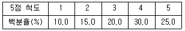
- 2.45
- 2.85
- 3.45
- 3.85
(정답률: 66%)
71. 두 정당 (A, B)에 대한 선호도가 성별에 따라 다른지 알아보기 위하여 1000명을 임의추출하였다. 이 경우에 가장 적합한 통계분석법은?
- 분산분석
- 회귀분석
- 인자분석
- 교차분석
(정답률: 46%)
72. 확률변수 X가 평균이 5이고 표준편차가 2인 정규분포를 따를 때, X의 값이 4보다 크고 6보다 작을 확률은? (단, P(Z＜0.5)=0.6915, Z~N(0,1))
- 0.6915
- 0.3830
- 0.3085
- 0.2580
(정답률: 50%)
73. 우리나라 사람들 중 왼손잡이 비율은 남자가 2%, 여자가 1%라 한다. 남학생 비율이 60%인 어느 학교에서 왼손잡이 학생을 선택했을 때 이 학생이 남자일 확률은?
- 0.75
- 0.012
- 0.25
- 0.⑤
(정답률: 41%)
74. 유의수준에 대한 설명으로 옳은 것은?
- 대립가설이 참일 때 귀무가설을 채택하는 오류를 범할 확률의 최대허용한계이다.
- 유의수준 α검정법이란 제2종 오류를 범할 확률이 α이하인 검정 방법을 말한다.
- 귀무가설이 참임에도 불구하고 귀무가설을 기각하는 오류를 범할 확률의 최대허용한계를 뜻한다.
- 제1종 오류를 범할 확률과 제2종 오류를 범할 확률 중 큰 쪽의 확률을 의미한다.
(정답률: 58%)
75. A, B, C 세 지역에서 금맥이 발견될 확률은 각각 20%라고 한다. 이들 세 지역에 대하여 금맥이 발견될 수 있는 지역의 수에 대한 기댓값은?
- 0.60
- 0.66
- 0.72
- 0.75
(정답률: 61%)
76. 크기가 10인 표본으로부터 얻은 자료 (x1, y1), (x2, y2).....,(x10, y10)에서 얻은 단순선형회귀식의 기울기가 0인지 아닌지를 검정할 때, 사용되는 t분포의 자유도는?
- 19
- 18
- 9
- 8
(정답률: 27%)
77. 다음 중 일원배치법의 모집단 모형으로 적합한 것은? (단, Yi는 관측값이고 μ는 이들의 모평균, ϵi나 ϵij는 실험의 오차로서 평균 0, 분산 σ2인 정규분포 N(μ, σ2)을 따르고 서로 독립이다.)
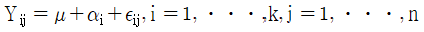
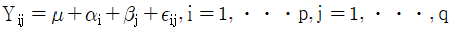
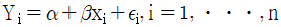
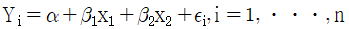
(정답률: 26%)
78. 임의의 모집단으로부터 확률표본을 취할 때 표본평균의 확률분포는 표본의 크기가 충분히 크면 근사적으로 정규분포를 따른다는 사실의 근거가 되는 이론은?
- 중심극한의 정리
- 대수의 법칙
- 체비셰프의 부등식
- 확률화의 원리
(정답률: 66%)
79. 두 변수 x와 y의 함수관계를 알아보기 위하여 크기가 10인 표본을 취하여 단순회귀분석을 실시한 결과 회귀식 y=20-0.1x을 얻었고, 결정계수 R2은 0.81이었다. x와 y의 상관계수는?
- -0.1
- -0.81
- -0.9
- -1.1
(정답률: 53%)
80. IQ점수는 N(100, 152)를 따른다고 한다. IQ점수가 100 이상인 경우는 전체의 몇 % 인가?
- 0
- 50
- 75
- 100
(정답률: 46%)
81. 결정계수(coefficient of determination)에 대한 설명으로 틀린 것은?
- 총변동 중에서 회귀식에 의하여 설명되어지는 변동의 비율을 뜻한다.
- 종속변수에 미치는 영향이 적은 독립변수가 추가 되어도 결정계수는 변하지 않는다.
- 모든 측정값들이 추정회귀직선상에 있는 경우 결정계수는 1이다.
- 단순회귀의 경우 독립변수와 종속변수간의 표본상관계수의 제곱과 같다.
(정답률: 54%)
82. 가설검정과 관련한 용어에 대한 설명으로 틀린 것은?
- 제2종 오류란 대립가설 H1이 참임에도 불구하고 귀무가설 H0를 기각하지 못하는 오류이다.
- 유의수준이란 제1종 오류를 범할 확률의 최대허용한계를 말한다.
- 유의확률이란 검정통계량의 관측값에 의해 귀무가설을 기각할 수 있는 최소의 유의수준을 뜻한다.
- 검정력함수란 귀무가설을 채택할 확률을 모수의 함수로 나타낸 것이다.
(정답률: 45%)
83. 다음 중 상관분석의 적용을 위해 산점도에서 관찰해야 하는 자료의 특징이 아닌 것은?
- 선형 또는 비선형 관계의 여부
- 이상점의 존재 여부
- 자료의 층화 여부
- 원점(0,0)의 통과 여부
(정답률: 46%)
84. 어느 회사에서는 남녀사원이 퇴직할 때까지의 평균근무연수에 차이가 있는지를 알아보기 위하여 표본을 무작위로 추출하여 다음과 같은 자료를 얻었다. 남자사원의 평균근무연수가 여자사원에 비해 2년보다 더 길다고 할 수 있는가에 대해 유의수준 5%로 검정한 결과는?
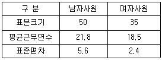
- 귀무가설을 기각한다. 따라서 남자사원의 평균 근무연수는 여자사원보다 더 길다.
- 귀무가설을 채택한다. 따라서 남자사원의 평균 근무연수는 여자사원보다 더 길지 않다.
- 귀무가설을 기각한다. 따라서 남자사원의 평균 근무연수는 여자사원에 비해 2년보다 더 길다.
- 귀무가설을 채택한다. 따라서 남자사원의 평균 근무연수는 여자사원에 비해 2년보다 더 길지 않다.
(정답률: 24%)
85. 어느 기업의 전년도 대졸 신입사원 임금의 평균이 200만원이라고 한다. 금년도 대졸신입사원 중 100명을 조사하였더니 평균이 209만원이고 표준편차가 50만원이었다. 금년도 대졸 신입사원의 임금이 인상되었는지 유의수준 5%에서 검정한다면, 검정통계량의 값과 검정 결과는? (단, P(ｌZｌ＞1.64)=0.10, P(ｌZｌ＞1.96)=0.⑤, P(ｌZｌ＞2.58)=0.01)
- 검정통계량 : 1.8, 검정결과 : 금년도 대졸신입사원 임금이 전년도에 비하여 인상되었다고 할 수 있다.
- 검정통계량 : 1.8, 검정결과 : 금년도 대졸신입사원 임금이 전년도에 비하여 인상되었다고 할 수 없다.
- 검정통계량 : 2.0, 검정결과 : 금년도 대졸신입사원 임금이 전년도에 비하여 인상되었다고 할 수 있다.
- 검정통계량 : 2.0, 검정결과 : 금년도 대졸신입사원 임금이 전년도에 비하여 인상되었다고 할 수 없다
(정답률: 29%)
86. 다음 6개 자료의 통계량에 대한 설명으로 틀린 것은?
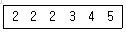
- 최빈값은 2이다.
- 중앙값은 2.5이다.
- 평균은 3이다.
- 왜도는 0보다 작다.
(정답률: 66%)
87. 일원분산분석 모형에서 오차항에 대한 가정에 해당되지 않는 것은?
- 정규성
- 독립성
- 일치성
- 등분산성
(정답률: 49%)
88. K라는 양궁선수는 화살을 쏘았을 때 과녁의 중심에 맞출 확률이 0.6이라고 한다. 이 선수가 총 7번 화살을 쏜다면 과녁의 중심에 몇 번 정도 맞출 것으로 기대할 수 있는가?
- 8.57
- 6.00
- 4.20
- 1.68
(정답률: 67%)
89. A 지역, B 지역, C 지역의 가구당 소득을 조사하여 분석한 결과가 다음과 같을 때, 3개지역의 변이계수를 비교한 결과로 옳은 것은?
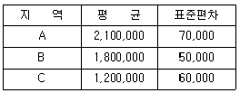
- A지역의 소득이 다른 두 지역에 비해 평균이 밀집되어 있다.
- B지역의 소득이 다른 두 지역에 비해 평균에 가장 밀집되어 있다.
- C지역의 소득이 다른 두 지역에 비해 평균에 가장 밀집되어 있다.
- 평균이 다르므로 비교할 수 없다.
(정답률: 57%)
90. 어느 기업의 신입직원 월 급여는 평균이 2백만원, 표준편차는 40만원인 정규분포를 따른다고 한다. 신입직원들 중 100명의 표본을 추출할 때, 표본평균의 분포는?
- N(2백만, 16)
- N(2백만, 160)
- N(2백만, 400)
- N(2백만, 1600)
(정답률: 39%)
91. 다음 자료에 대한 설명으로 틀린 것은?
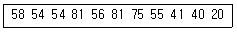
- 중앙값은 55이다.
- 표본평균은 중앙값보다 작다.
- 최빈값은 54와 81이다.
- 자료의 범위는 61이다.
(정답률: 65%)
92. 가설검정 시 대립가설(H1)이 사실인 상황에서 귀무가설(H0)을 기각할 확률은?
- 검정력
- 신뢰수준
- 유의수준
- 제2종 오류를 범할 확률
(정답률: 48%)
93. 두 모집단의 분산이 같지 않다고 가정하여 평균차이를 검정했을 때 유의수준 5% 하에서 통계적으로 평균차이가 유의하였다. 만약 두 모집단의 분산이 같은 경우 가설 검정결과의 변화로 틀린 것은?
- 유의확률이 작아진다.
- 평균차이가 존재한다.
- 표준오차가 커진다.
- 검정통계량 값이 커진다.
(정답률: 38%)
94. 어떤 공장에 같은 길이의 스프링을 만드는 3대의 기계 A, B, C가 있다. 기계 A, B, C에서 각각 전체 생산량의 50%, 30%, 20%를 생산하고, 기계의 불량률이 각각 5%, 3%, 2%라고 한다. 이 공장에서 생산된 스프링 하나가 불량품일 때, 기계 A에서 생산되었을 확률은?
- 0.5
- 0.66
- 0.87
- 0.33
(정답률: 48%)
95. 남, 여 두 집단의 연간 상여금과 평균과 표준편차가 각각 (200만원, 30만원), (130만원, 20만원)이었다. 변동(변이)계수를 이용해 두 집단의 산포를 비교한 것으로 옳은 것은?
- 남자의 상여금 산포가 더 크다.
- 여자의 상여금 산포가 더 크다.
- 남녀의 상여금 산포가 같다.
- 비교할 수 없다.
(정답률: 46%)
96. 확률변수 X의 확률분포가 다음과 같을 때, 분산 Var(X)의 값은?
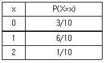
- 0.36
- 0.6
- 1
- 0.49
(정답률: 44%)
97. 회귀분석에서는 회귀모형에 대한 몇 가지 가정을 전제로 하여 분석을 실시하게 되며, 이러한 가정들에 대한 타당성은 잔차분석(residual analysis)을 통해 판단하게 된다. 이 때 검토되는 가정이 아닌 것은?
- 정규성
- 등분산성
- 독립성
- 불편성
(정답률: 54%)
98. 다중회귀분석에 관한 설명으로 틀린 것은?
- 표준화잔차의 절대값이 2이상인 값은 이상값이다.
- DW(Durbin-Watson) 통계량이 0에 가까우면 독립이다.
- 분산팽창계수(VIF)가 10이상이면 다중공선성을 의심해야 한다.
- 표준화잔차와 예측값의 산점도를 통해 등분산성을 검토 해야 한다.
(정답률: 31%)
99. 봉급생활자의 연봉과 근속년수, 학력 간의 관계를 알아보기 위하여 연봉을 반응변수로 하여 회귀분석을 실시하기로 하였다. 그런데 근속년수는 양적 변수이지만 학력은 중졸, 고졸, 대졸로 수준 수가 3개인 지시변수(또는 가변수)이다. 다중회귀모형 설정 시 필요한 설명변수는 모두 몇 개인가?
- 1
- 2
- 3
- 4
(정답률: 39%)
100. 다음 중 추정량에 요구되는 바람직한 성질이 아닌 것은?
- 불편성(unbiasedness)
- 효율성(efficiency)
- 충분성(sufficiency)
- 정확성(accuracy)
(정답률: 44%)